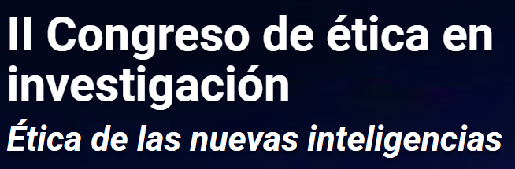
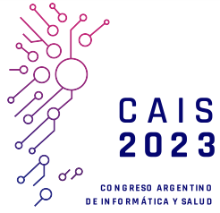
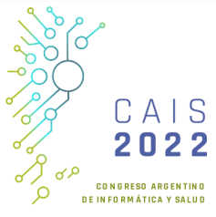
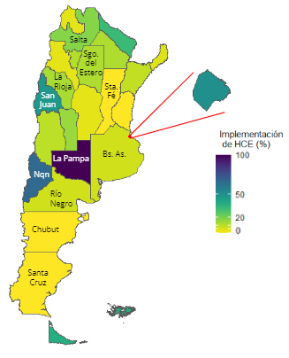
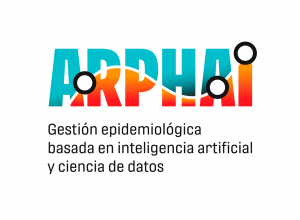
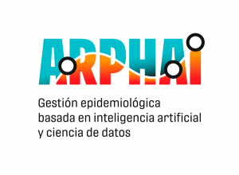
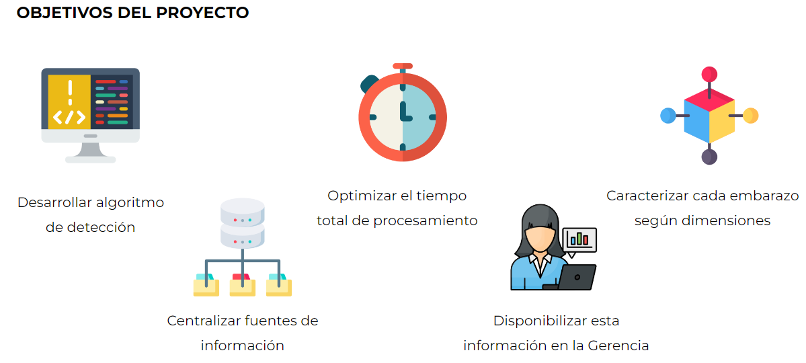
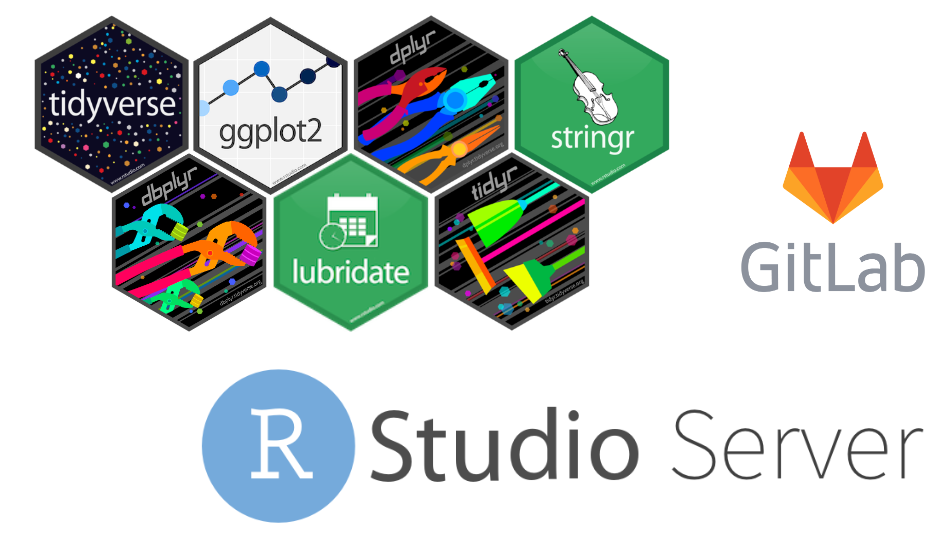

Presentations
In this section I share my presentations with a brief introduction to the project, my contribution, and links to videos, the code, and other resources when applicable:
Standardized treatment of requests for health information based on risk assessment.

Presentation at II Research Ethics Congress. September, 2023
S. L. López, M. C. Palermo and M. C. Nanton.
The Autonomous City of Buenos Aires (CABA) carries out a process of implementing Health Information Systems (SIS) in the public subsystem, which results in a large volume of data. These data are essential for the management of the health system, research, and the dissemination of public information. The Health Information Management and Statistics Office is in charge of managing both the data coming from the SIS and the requests for information from various actors, including those who carry out research work. To standardize the treatment of requests in search of transparency, equity, and optimization of the use of resources, a procedure was developed that provides specific directives according to the characteristics of the request and delimits transparent circuits. With this procedure, we seek to contribute to the ethical use and responsible treatment of data in health research.
Ethical challenges in the use of sensitive data and models for de-identification.
Presentation at II Research Ethics Congress. September, 2023
M. Rajngewerc, S. L. López, V. Xhardez, L. Ación and L. Alonso Alemany.
Electronic medical records can be a valuable source of information for research (detection of epidemic outbreaks, effectiveness of vaccines, etc.). However, as this is a secondary use of data collected in the context of healthcare, some considerations must be taken into account. In this work, we are going to focus on the adequate protection of personal data that is usually found in the health team’s notes about the consultation (free text). This data is legally protected due to its potential impact on fundamental rights, such as the right to privacy or non-discrimination (for example, in access to the labor market). Therefore, to adapt health records to research, it is essential to eliminate information that allows the identification of the person who owns the data (de-identification). There are models based on Artificial Intelligence for de-identifying sensitive data, but they do not guarantee complete anonymization of the data and their availability in Spanish is limited. Furthermore, it is necessary to guarantee that the errors made by these models, exposing identifying data, do not have discriminatory effects, affecting some population groups more (for example, migrants, people with disabilities, etc.). We will present a series of recommendations based on our experience in developing and evaluating biases of a free health text de-identification tool in Spanish.
De-identification of Spanish healthcare free-text: not fully reliable but far better than nothing.

Presentation at Argentine Congress of Informatics and Health. September, 2023
S. L. López, M. Rajngewerc, L. Silvi, L. Alonso Alemany and L. Ación.
Abstract: Health records from electronic health records (EHR) are a valuable source of information for multiple secondary uses of research, planning, etc. However, they are sensitive data legally protected due to their potential impact on fundamental rights, such as the right to privacy or non-discrimination (for example, in access to the labor market). For this reason, to adapt health records to secondary use, it is essential to apply processes that eliminate information that allows the owner of the data to be identified (de-identification). This paper presents a feasibility test of the automatic de-identification of free text in EHR. An approach to the task was analyzed, with particular attention to the potential biases in its functioning, which can result in discriminatory behaviors. Taking into account the particularities of the data: homogeneity, heterogeneity, and proportion of identifying entities, the metrics: Treatment Equality, Equal Opportunity, Equalized Odds, and Conditional Use Accuracy Equality were applied to analyze the existence of biases produced by the model.
Towards a Community-Based Responsible Use of Health Data in Argentina and beyond.
Presentation at csv,conf,v7. April, 2023
*presentation slides (in Spanish/English) *video (in Spanish)
A presentation about the challenges of working with Health Data not originally captured for research and the work of the Responsible Use of Data team from the ARPHAI project in this matter.
De-identification of Spanish healthcare free-text: not fully reliable but far better than nothing.
S. L. López, L. Silvi, L. Alonso Alemany and L. Ación. Poster presentation at Latin American Meeting In Artificial Intelligence. March, 2023
Abstract: In Argentina, Electronic Health Records (EHR) have been continuously implemented increasing the amount of this type of data. Ethical considerations arise for their reuse to address secondary research, public health, management, and policy-making questions. Health data are sensitive data according to national and international regulations (HIPAA, GDPR, etc.) because they can significantly impact people’s lives. Thus, having tools for effectively eliminating protected personal information (PPI) that could allow patient identification is a must. But anonymization of free text in EHR is a challenging problem because it is full of peculiarities (words outside common vocabulary, ambiguity, etc.). We are presenting our experience in developing a de-identification algorithm for free text in the EHR of a province in Argentina. We found that it is not clear to humans what information is PPI during a manual anonymization task. As expected, automatic processes also miss cases of PPI, even more than humans do. However, a simple, rule-based approach can do a good job in removing most of the PPI, outperforming a more sophisticated, machine-learning approach for low-resources contexts. Although no process can guarantee anonymization, our method can mitigate the impact of possible data breaches from highly sensitive information.
Anonymization of texts from Electronic Health Records and Responsible Use of Data.

Presentation at Argentine Congress of Informatics and Health. October, 2022
*presentation slides (in Spanish) *online participation in Track 1 Day 3
A presentation about the work of the Responsible Use of Data team from the ARPHAI project.
Challenges in the secondary use of Health Data.

Presentation at Artificial Intelligence in Medicine Seminar at Universidad Torcuato Di Tella. September, 2022
*presentation slides (in Spanish)
Talk about the challenges of working with Health Data not originally captured for research.
Responsible Use of Health Data
 

Presentation at Calculus Institute. March, 2022
*presentation slides (in Spanish)
A presentation about my postdoctoral research and the Responsible Use of Data.
Data science with R with an impact on Public Health: an experience of using tidyverse for pregnancy detection
 
S. L. López, C. Mengoni Goñalons, M. C. Nanton and M. Rodríguez Tablado. Presentation at LatinR 2021 | Conferencia Latinoamericana sobre Uso de R en Investigación + Desarrollo. 2021
All material is in Spanish: *paper *pre recorded presentation *presentation slides *online participation in “Applications in the Health Area” session
We present our work of phenotyping and characterization of pregnancies from electronic health records (EHR) and admission, discharge, and transfer (ADT) records from the Public Health subsystem of the City of Buenos Aires (Argentina)